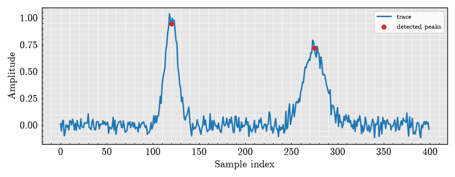

Note
Go to the end to download the full example code.
Core Result Objects: Trace, DetectionResult, and MetricResult#
This example introduces the lightweight result objects shared by the new DeepPeak architecture. They contain numerical data and metadata, but no TensorFlow or plotting dependencies.
Create a trace and a detection result#
import json
import matplotlib.pyplot as plt
import numpy as np
from DeepPeak.core import DetectionResult, MetricResult, Trace
rng = np.random.default_rng(42)
x_values = np.arange(400, dtype=float)
signal = 0.05 * rng.normal(size=x_values.size)
signal += np.exp(-0.5 * ((x_values - 120.0) / 7.0) ** 2)
signal += 0.7 * np.exp(-0.5 * ((x_values - 275.0) / 12.0) ** 2)
trace = Trace(signal=signal, dx=1.0, metadata={"source": "synthetic"})
detection = DetectionResult(
peaks=np.array([120, 275]),
properties={"peak_values": signal[[120, 275]]},
detection_kwargs={"method": "known synthetic peaks"},
threshold=0.25,
)
mean_amplitude = MetricResult(
name="mean_amplitude",
values=float(np.mean(signal[detection.peaks])),
units="arbitrary amplitude",
)
Serialize results for a report or experiment record#
serialized = {
"trace": trace.to_dict(),
"detection": detection.to_dict(),
"metric": mean_amplitude.to_dict(),
}
print(json.dumps(serialized, indent=2)[:500] + "...")
{
"trace": {
"signal": [
0.015235853987721568,
-0.05199920531202478,
0.03752255979032287,
0.0470282358195607,
-0.09755175943269183,
-0.06510897534311591,
0.006392020158364269,
-0.01581212961717911,
-0.0008400578752144398,
-0.04265219637867901,
0.04396989874314143,
0.03888959677144742,
0.0033015348780608025,
0.056362060348401646,
0.023375467112602282,
-0.04296462314416191,
0.018437539204124...
Plot the result without coupling plotting to the result objects#
figure, axis = plt.subplots(figsize=(9, 3.5))
axis.plot(x_values, trace.signal, color="C0", label="trace")
axis.scatter(
detection.peaks,
trace.signal[detection.peaks],
color="C3",
zorder=3,
label="detected peaks",
)
axis.set_xlabel("Sample index")
axis.set_ylabel("Amplitude")
axis.legend()
figure.tight_layout()
figure

<Figure size 900x350 with 1 Axes>
Total running time of the script: (0 minutes 0.207 seconds)